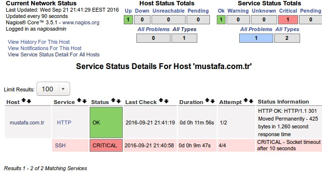

Nagios ağ üzerinde bulunan sistemleri monitör etmek için kullanılan bir yazılım olduğunu bir önceki yazılarımda ifade etmiştim. Şimdi nagios üzerine uzak bir sunucuyu kontrol etmek için görev (host, servis) tanımlayalım.
Bu yazı da www.mustafa.com.tr adresi için HTTP ve SSH servislerini belirli zaman aralıklarında kontrol etmesini sağlayacağım.
Host ve servis tanımlama
/etc/nagios3/conf.d dizini altına giderek hostadi_nagios2.cfg adında bir dosya oluşturalım.
define host {
use generic-host
host_name mustafa.com.tr
alias mustafa.com.tr
}
define service {
use generic-service ; Name of service template to use
host_name mustafa.com.tr
service_description HTTP
normal_check_interval 2
retry_check_interval 1
flap_detection_enabled 0
max_check_attempts 2
check_command check_http
notifications_enabled 1
}
define service {
use generic-service
host_name mustafa.com.tr
service_description SSH
check_command check_ssh
notifications_enabled 1
}
Akabinde aşağıdaki komutu çalıştırarak config dosyasının hata kontrolünü sağlayalım.
sudo nagios3 -v /etc/nagios3/nagios.cfg | less
Nagios'u yeniden başlatalım.
sudo service nagios3 reload
 Host nagios paneline eklenmiş gözüküyor.